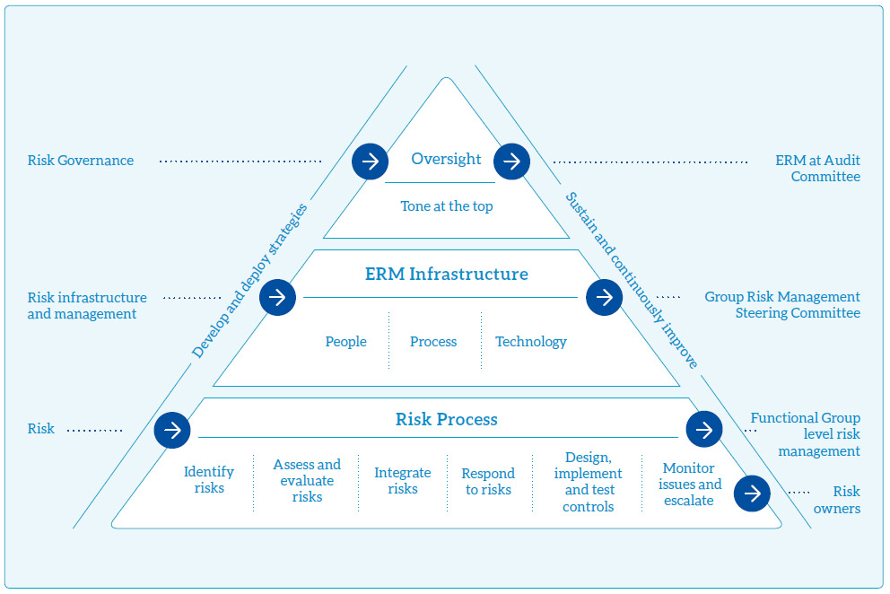

Risk management
Enterprise Risk Management (ERM)
Key factors such as highly competitive and volatile business environments, market saturation of telecommunications operators, OTT Players, fast-changing technology, and economic uncertainties are exerting pressure on business operations. It is vital for an organisation to foresee business-critical risks and manage them effectively. Having considered the importance, the Board of Directors (BOD) has given directions to strengthen the risk management processes across the organisation. Complying with the boards’ direction, the Enterprise Risk Management (ERM) process and the ERM framework were developed. References have been made to the best practices of ERM such as ISO 31000 and COSO and due guidance has been obtained from Messrs. Deloitte. The implementation of the ERM process within SLT has been commenced to identify, manage functional risks and to create a risk management culture marked as Business-as-Usual (BAU).
A formal risk reporting process to the board was introduced with the aim of enhancing and driving the ERM process. In order to support this process, a Risk Management Steering Committee (RMSC) was formed under the Chairmanship of the Group CEO. This was to aid analysing any escalated risks from functional groups and to identify any business-critical risks as such. Further, the ERM process has been extended to our subsidiaries including Mobitel and the Board reviews Group risks at the Audit Committee meeting.
Risk management has now reached maturity at both functional units and project management and it has become an important (BAU) process. It encourages senior executives to embed the risk management process into functional units. This has empowered them to take appropriately calculated positive risks (rewarded risks) and accept, mitigate, avoid or transfer any negative risks (unrewarded risks). The figure below illustrates the organization of the ERM, its responsibilities and the relevant reaches of the responsible groups.

Below summarises top business-critical risks, both industry-specific and company-specific with a brief description of each risk, their potential impact and the actions taken to mitigate them.
Financial risks
The main risks arising from our financial assets and liabilities are risks associated with foreign exchange, fund management and increased operating costs. Financial markets continue to be volatile and this may heighten execution risk for funding activities and credit risk premiums for market participants.
Exposure to foreign exchange fluctuation
Telecommunication operators in Sri Lanka collaborate with international vendors in obtaining services for telecommunication systems implementation and maintenance additional to procuring hardware and software applications inclusive of telecommunication systems. Thus, a significant portion of our capital expenditure as well as operational expenditure are incurred in foreign currencies leading to foreign exchange translation losses.
We are consistently working on improving foreign currency inflows from our services provided to international operators. Through this we are establishing a natural hedge to minimise our exposure to foreign exchange fluctuations. Furthermore, we explore the possibility of limiting non-business critical capital expenditure and other liabilities to control cash outflows in terms of foreign currencies.
Fund management
The dynamic nature of the industry with fast changing technologies makes products and systems obsolete fast. It is vital to maintain shorter pay-back periods for the investments. Increased asset depreciation values erode profits margins. Scarcity of funding requires us to prioritise the investments against expected returns. Subsequently, our investment portfolio is funded with the most appropriate funding sources with the aim of maintaining a healthy cash flow.
We also explore the possibilities of vendor financing options and effective working capital management practices. Effective and efficient cash flow management is a challenge for us. We have addressed this challenge through revising collection periods and launching attractive promotional campaigns to ascertain higher collection rates.
Escalating operating costs exceeding revenue growth
Intense price competition among the competitors has compelled the operators to maintain low profit margins despite the increasing operational expenditure. Increase of consumers’ power and low switching cost has pressurised the operators to invest on unique product features as well as offering discounts and promotions, further cutting down profits.
As the largest wire-line telecommunication operator in Sri Lanka, our operation and maintenance cost on services provided to domestic customers is significant. We thrive to provide the best after-sales service while keeping our operational cost low through continuous improvements (“kaizen”) of business process, business process re-engineering and better utilisation of human resources. We look into optimizing sub-contractor management, renegotiating for lowering the rates of Annual Maintenance Contracts (AMCs ), and introducing OPEX based vendor financing options for controlling operational and capital expenditure.
Economic risks
Changes in domestic, regional and global economic conditions may have a material adverse effect on the demand for telecommunication, information technology (IT) and related services, digital services, and hence, on our financial performance and operations.
The economic headwinds that prevailed in former year and the resulting uncertainty in the macro-economic environment, diminished by the latter part of the year. This reflected on long-term corporate credit rating of “B+”, revision of its outlook on the Democratic Socialist Republic of Sri Lanka from “Negative” to “Stable”.
Taxation
Government’s heavy taxation policy on telecommunication services has an adverse impact on business of the Company.Government has revised the financial levies imposed on internet services during the year by removing the Telecommunication Levy of 10% in view of improving the affordability of the service. Yet, Telecommunication Levy (TL) of 25% except for Internet Services, Value Added Tax (VAT) of 15%, Nation Building Tax (NBT) of 2% and CESS Levy of 2% is continued to be imposed on the telecommunication services. In addition, International Telecommunication Levy and IDD Levy are applied on international services. Since, the burden of such levies and taxes are borne by (passed to) the customer, demand and usage of telecommunication services could be adversely affected in a critical manner.
We, Sri Lanka Telecom including our mobile arm, Mobitel comprehend the price sensitive nature of our customers and take proactive actions to prevent such potential revenue losses.
Regulatory and legal risks
We are exposed to the risk of regulatory or litigation actions by regulator and other parties. Our operations aligning with Government’s vision on good governance are subjected to regulatory conditions, various other laws and regulations such as those relating to customer data privacy and protection, anti-bribery and corruption as well as workplace safety and health.
Regulatory risks on licence conditions
Telecommunication businesses operate based on licences issued by Sri Lanka Telecommunication Regulatory Commission under the Telecommunication Act. Failure to meet regulatory requirements may result in fines or other sanctions including ultimately, litigation. Furthermore, such licenses, either right to access a band of spectrum or right to use a particular access technology secured by us provide a competitive advantage in business. Violation of licence conditions or exploiting beyond authorised scope of licence by some operators create unfair competition in the market including call bypass and may affect our business and/or our capacity to operate in line with our business objectives.
We closely work with the Management and our partners in the business to comply with the regulatory requirements. We closely monitor new developments in the regulatory framework and regularly participate in discussions and consultations with the respective regulatory authorities and the industry to propose changes and provide feedback on regulatory reforms and developments in the telecommunications and media industry.
Legal risks
We are exposed to the risk of regulatory or litigation action by regulators and other parties. Examples of such litigation are disclosed in Notes to the Financial Statements under “Contingent Liabilities”.
The following are some of the legal proceedings the SLT Group faced during the reporting period:
- Global Electroteks Limited initiated legal action under High Court Case No. 20/2006 claiming damages of USD 12 million from Sri Lanka Telecom PLC ("SLT") for alleged unlawful disconnection of interconnection services. Further trial will be held on 28 March 2018.
- Appeal Case filed by Directories Lanka Private Limited (DLPL) against SLT against the dismissal of CHC 2/2006(3) claimed damages of Rs. 250 million, for alleged unfair competition with regard to artwork on the cover page of the Directory by SLT. The proceedings have not commenced. DLPL appealed against the above order.
- 12/2008 CBCU, an inquiry by Sri Lanka Customs –A consignment of CDMA equipment was detained in October 2008 by the Customs Authority. Subsequently the equipment were cleared pending the Inquiry, based on a cash deposit and bank guarantee submitted by SLT. The Order was delivered in October 2014 imposing a mitigated forfeiture of Rs. 1,820,502,062.00 on SLT. SLT has filed Case in Court of Appeal under CA/writ/387/2014 against this Order and interim order was issued by Court on 09 March 2016, precluding Respondents from enforcing order dated 17 October 2014. Next date of the case is 22 June 2018.
- Customs Case No. ADP/031/2009 – Goods valued at USD 996,785.65, which was imported under the last consignment of equipment for NGN Phase II expansion project, was detained by the Customs in May 2009. Subsequently, the equipment was cleared in July 2009. Pending the Inquiry. Presently awaiting the decision of the Customs Department.
- Debt Recovery Officers who were attached to SLT had filed legal proceedings in Labour Department (Labour Commissioner) and Labour Tribunal and number of proceedings initiated under each forum are 47 and 21 respectively. The relief claimed includes EPF, ETF, and compensation with regard to proceedings initiated before the Labour Commissioner and includes reinstatement or compensation under the proceedings before Labour Tribunal. An appeal is pending (WR232/2015) filed against the proceeding before Labour Commission. Appeals filed in High Court in regard to the proceedings before Labour Tribunal.
- On 18 July 2017 DBN filed a Case against SLT under Case Number HC/Civil/23/2017 in the Commercial High Court regarding alleged violation of Intellectual Property Rights, on the basis that SLT used an RFP floated by Dialog. An ex-parte interim injunction was obtained from Court by DBN on 19 July 2017 requiring SLT to disclose the source/party who revealed the RFP and to furnish the original under the provisions of Intellectual Property Act. Further permanent injunction and a claim of damages of Rs. 7, 800,000,000.00 was made under the petition by DBN. SLT filed revocation paper on 10 August 2017. This case is coming up on 26 March 2018 for objection of SLT and fixed for inquiry in to interim measure on 16 May 2018.
Our investment governance framework and the other policies guide the project managers and management in managing contractual arrangements with vendors and customers. We are focused on maintaining high standards in operations with respective to governing laws since litigation actions may have a material effect on our financial position and results of operations.
Information security risks
In this information society, an organisation’s systems and data are crucial for business continuity. Loss of sensitive information or any data breach may lead to loss of competitive advantage and loss of customer confidence. DDOS attacks, malware and other cyber-attacks may damage company systems as well as company reputation. During the year several ransonware attacks and hacking incidents were reported globally. Unfortunately, such cyber-security incidents are becoming more and more common whilst the need for enhanced sophisticated level of information security systems are emphasised.
Cyber security and information security
As our businesses and operations rely heavily on information technology, we have established an Information Security Management System (ISMS) within the organisation. This ensures internal audits are conducted on a regular basis complying with ISO 27001 standard, vulnerability assessment of critical services, penetration testing, compromise assessment, and security architecture review. Remedial actions are taken for identified vulnerabilities. We are currently working on information security posture assessment for our business sector to ensure the growth plans are executed without any interruption.
Business risks
As we move into new growth areas in ICT to create additional revenue streams through products and solutions such as OTT applications, managed services, cloud services, infrastructure services, cyber security, IoT services, data analytics and digital services, it alters the business model.
New businesses place new demands on people, processes and systems. We respond by continually updating our organisation structure, reviewing human resource recruitment plan, training and development plan, policies and processes and by investing in new technologies to meet changing needs.
Human resource management and transformation
Organisational cultural and mindset change will be a primary factor in transforming the incumbent telecommunication operator in Sri Lanka to adopt innovative business models which require creativityas we seek new avenues of growth.
Attracting and sustaining talent including new skills and capabilities amidst the retirement of significant number of experienced staff during the forthcoming years is a challenge to us. We are in the process of preparing our five year training and development plan aligning with the organisational five year strategic plan. Necessary project related trainings are offered to our employees to enhance their technical skills and to update themselves with the latest technologies. Further out bound training opportunities, foreign tours, soft-skill enhancement programmes are offered to enhance employee motivation level. We are consistently focused on making Sri Lanka Telecom a Great Place to Work.
Threat from OTT
Over-the-Top (OTT) applications are gradually becoming a threat to traditional voice and data revenues of telecommunication operators especially the international on-net traffic as consumers of generation Y including millennials, generation Z, the digital natives are more comfortable with social networking and communication over Internet platforms rather than using traditional communication channels. Although OTT applications tend to decline traditional voice revenues, it also becomes complementary on high broadband adoption and increased internet usages. We are developing a series of OTT applications to realise this opportunity.
Threat from competitors
The telecommunication industry in Sri Lanka is nearly saturated due to existence of several telecommunication operators. In addition to the competition among those traditional telecommunication operators, non-traditional competitors such as Over-the-Top (OTT) players have entered into the market, flooding the market creating intense competition. The competition in the domestic market has broadened to the international market.
We thrive to create a unique value proposition for our customers and win their loyalty through continuous product feature enhancements, product line extensions, and product bundling offers as well as through our novel products based on Internet of Things (IoT) and connected devices. e-Sports events, robotics/machine-to-machine based new technology campaigns, location based product campaigns exhibit our capabilities and our team is well-equipped in developing more and more innovative products.